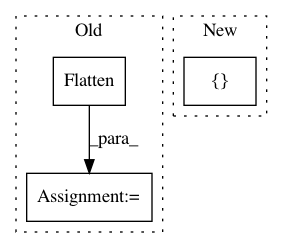

13aa31bc1a0b87d6c4b5e787c9b041ec83831c34,autokeras/blocks/reduction.py,SpatialReduction,build,#SpatialReduction#Any#Any#,106
Before Change
"global_avg"],
default="global_avg")
if reduction_type == "flatten":
output_node = Flatten().build(hp, output_node)
elif reduction_type == "global_max":
output_node = layer_utils.get_global_max_pooling(
output_node.shape)()(output_node)
elif reduction_type == "global_avg":
After Change
if self.reduction_type is None:
reduction_type = hp.Choice(
REDUCTION_TYPE, [FLATTEN, GLOBAL_MAX, GLOBAL_AVG])
with hp.conditional_scope(REDUCTION_TYPE, [reduction_type]):
return self._build_block(hp, output_node, reduction_type)
else:
return self._build_block(hp, output_node, self.reduction_type)
In pattern: SUPERPATTERN
Frequency: 3
Non-data size: 3
Instances
Project Name: keras-team/autokeras
Commit Name: 13aa31bc1a0b87d6c4b5e787c9b041ec83831c34
Time: 2020-07-31
Author: jin@tamu.edu
File Name: autokeras/blocks/reduction.py
Class Name: SpatialReduction
Method Name: build
Project Name: keras-team/autokeras
Commit Name: b1bfd16945a658d02847209e46a2ba8d72b456e1
Time: 2019-07-01
Author: jhfjhfj1@gmail.com
File Name: autokeras/hypermodel/hyper_block.py
Class Name: RNNBlock
Method Name: build
Project Name: shenweichen/DeepCTR
Commit Name: 2d720403e43ccbf2286c99876ce3bb8a9286f5c6
Time: 2020-03-15
Author: wcshen1994@163.com
File Name: deepctr/models/flen.py
Class Name:
Method Name: FLEN